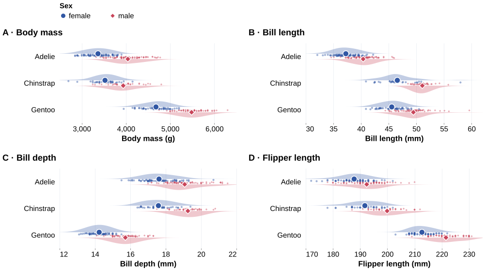

Palmer Penguins · Evidence for a research finding
Sex differences in penguin body size
Gorman, Williams and Fraser (2014) studied body-size differences and pre-breeding foraging in three Antarctic penguin species. We designed this companion figure for the paper's body-size result.
Research finding: Among the adults studied, males were larger on average than females within each of the three species, across all four measured traits.
The paper reports size dimorphism indices in Table 2. Our figure uses the public data to show the means in original units, individual observations and estimated distributions.
Original paper: the published size dimorphism indices
Table 2, SDI column excerpt. Negative values indicate larger male means. Original SDI samples: Adelie 137, Chinstrap 54, Gentoo 116.
| Species | Measurement | Published SDI |
|---|
| Adélie penguin | Culmen length | -0.09 |
| Adélie penguin | Culmen depth | -0.08 |
| Adélie penguin | Flipper length | -0.02 |
| Adélie penguin | Body mass | -0.20 |
| Chinstrap penguin | Culmen length | -0.11 |
| Chinstrap penguin | Culmen depth | -0.10 |
| Chinstrap penguin | Flipper length | -0.05 |
| Chinstrap penguin | Body mass | -0.10 |
| Gentoo penguin | Culmen length | -0.08 |
| Gentoo penguin | Culmen depth | -0.10 |
| Gentoo penguin | Flipper length | -0.04 |
| Gentoo penguin | Body mass | -0.17 |
Gorman et al. (2014), Table 2. Values as published, CC BY. These indices and our descriptive summaries use different analytical samples.

Reading the evidence
In each species row, compare the large blue circle (female mean) with the large coral diamond (male mean). The diamond is to the right in all 12 comparisons: three species × four measurements.
Blue half-distributions sit above each row and coral ones below. Small marks show records. Overlap helps explain why the finding concerns averages, rather than every individual.
Density thickness shows concentration within a measurement. It does not encode sample size or uncertainty in the mean. Read each labeled axis: scales differ between measurements.
Figure 1. Body measurements by sex and species. Large symbols show arithmetic means and small symbols show records. Half-distributions show Gaussian kernel density estimates. Bandwidths: mass 180 g, bill length 1.5 mm, bill depth 0.55 mm, flipper length 3 mm. Groups share bandwidth and density scaling within a measurement. Curves are drawn over each displayed domain.
Each panel uses the same 333 complete records. Female/male counts: Adelie 73/73, Chinstrap 34/34, Gentoo 58/61. Vertical offsets separate marks and carry no measured meaning. Distributions and individual spread are not confidence intervals.
Relationship to the original paper
The paper's Table 2 reports signed size dimorphism indices. Negative values indicate larger male means. This companion figure adds actual values and distributions using the public data.
We include known sex and four complete measurements: 333 of 344 records from 2007–2009. The paper's SDI analyses used additional exclusions (137 Adelie, 54 Chinstrap, 116 Gentoo). Our summaries do not reproduce its indices, models or inferential conclusions.
Study and Table 2: Gorman et al. (2014). Public data and CC0 license: palmerpenguins.
Check the group means and sample sizes
| Measurement | Species | Sex | n | Mean |
|---|
| Body mass | Adelie | female | 73 | 3368.84 |
| Body mass | Adelie | male | 73 | 4043.49 |
| Body mass | Chinstrap | female | 34 | 3527.21 |
| Body mass | Chinstrap | male | 34 | 3938.97 |
| Body mass | Gentoo | female | 58 | 4679.74 |
| Body mass | Gentoo | male | 61 | 5484.84 |
| Bill length | Adelie | female | 73 | 37.26 |
| Bill length | Adelie | male | 73 | 40.39 |
| Bill length | Chinstrap | female | 34 | 46.57 |
| Bill length | Chinstrap | male | 34 | 51.09 |
| Bill length | Gentoo | female | 58 | 45.56 |
| Bill length | Gentoo | male | 61 | 49.47 |
| Bill depth | Adelie | female | 73 | 17.62 |
| Bill depth | Adelie | male | 73 | 19.07 |
| Bill depth | Chinstrap | female | 34 | 17.59 |
| Bill depth | Chinstrap | male | 34 | 19.25 |
| Bill depth | Gentoo | female | 58 | 14.24 |
| Bill depth | Gentoo | male | 61 | 15.72 |
| Flipper length | Adelie | female | 73 | 187.79 |
| Flipper length | Adelie | male | 73 | 192.41 |
| Flipper length | Chinstrap | female | 34 | 191.74 |
| Flipper length | Chinstrap | male | 34 | 199.91 |
| Flipper length | Gentoo | female | 58 | 212.71 |
| Flipper length | Gentoo | male | 61 | 221.54 |